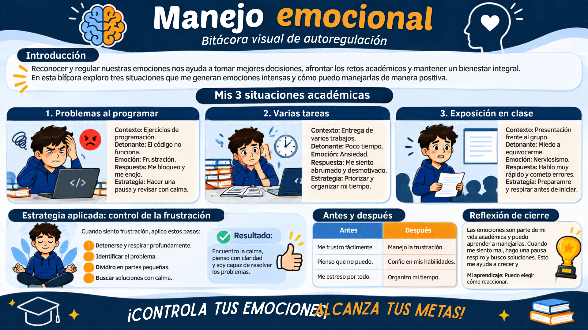
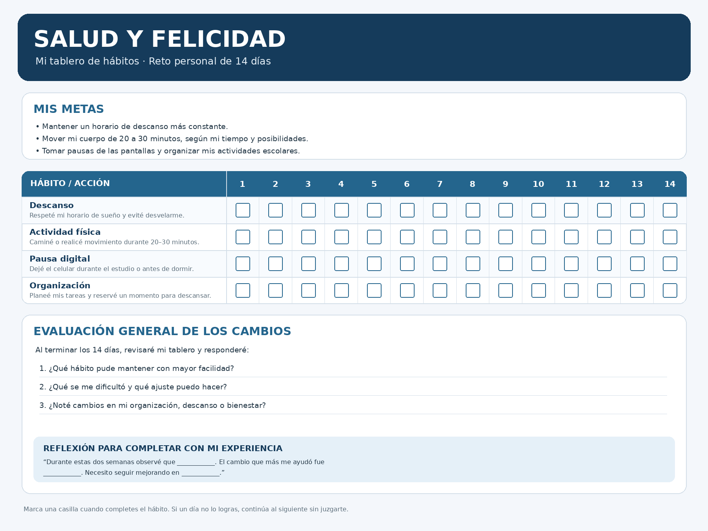
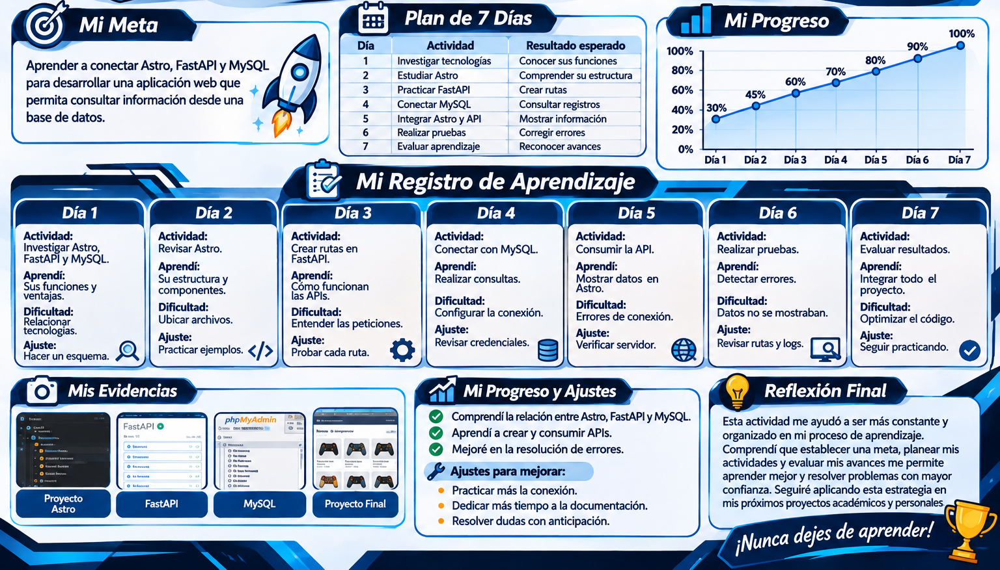
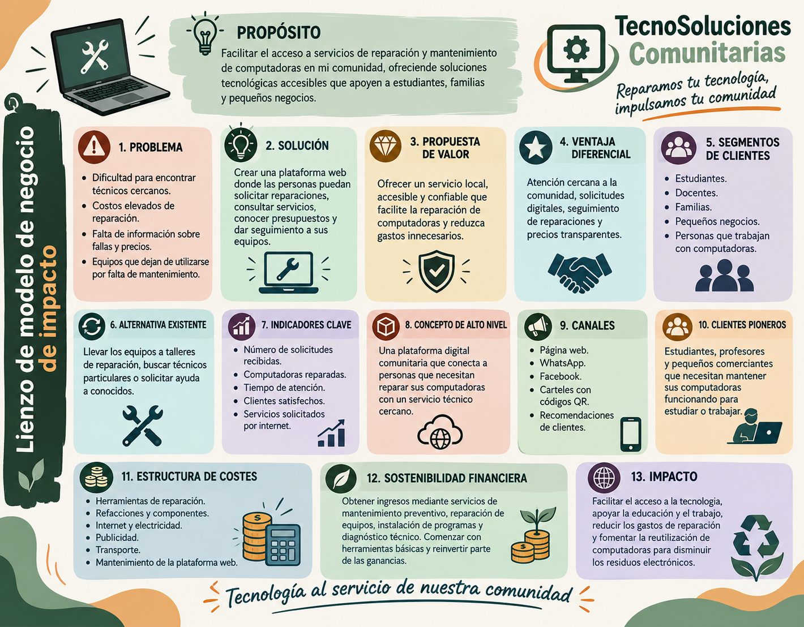

💻
Desarrollo web
Creación de sitios web con diseños modernos, organización de contenido y navegación sencilla.
Estudiante de Ingeniería Informática apasionado por la tecnología, la programación y el desarrollo de soluciones digitales.
Creación de sitios web con diseños modernos, organización de contenido y navegación sencilla.
Prácticas de programación y desarrollo de soluciones mediante diferentes herramientas.
Conoce mi perfil y mis intereses profesionales.
Soy estudiante de Ingeniería Informática en el Tecnológico de Estudios Superiores de San Felipe del Progreso. Actualmente curso el quinto semestre y continúo desarrollando mis conocimientos en tecnologías de la información.
Me interesa la programación, el desarrollo de páginas web, las bases de datos y la creación de aplicaciones. Durante mi formación he realizado diferentes proyectos académicos para poner en práctica lo aprendido.
Me considero una persona responsable, organizada, con disposición para aprender, trabajar en equipo y resolver problemas.
Seguir fortaleciendo mis habilidades técnicas y participar en proyectos donde pueda aplicar mis conocimientos y adquirir experiencia.
Tecnologías y capacidades desarrolladas durante mi formación académica.
Colaboración en actividades y proyectos escolares.
Análisis de situaciones para encontrar soluciones.
Interés por aprender nuevas herramientas.
Organización y compromiso con las actividades.
Mi formación académica.
Tecnológico de Estudios Superiores de San Felipe del Progreso.
Semestre: 5.º
Grupo: 503
Estado: Actualmente cursando
Prácticas académicas de programación, desarrollo web, creación de APIs y diseño de bases de datos.
Algunos de los trabajos desarrollados durante mi formación académica.
Creación de páginas web con distintas secciones, menús de navegación y diseños adaptables a dispositivos.
Práctica académica para crear rutas con FastAPI y trabajar con páginas y servicios dentro de una red local.
Desarrollo de ejercicios y aplicaciones para practicar lógica de programación, estructuras de control y manejo de datos.
Prácticas de creación de tablas, organización de información y relaciones entre datos.
Evidencias de mi proceso de aprendizaje como estudiante de quinto semestre de Ingeniería Informática.
En este apartado presento actividades para reconocer mis emociones, cuidar mi bienestar, mejorar mi forma de aprender, proponer soluciones para mi comunidad y construir mi futuro profesional. Los ejemplos y resultados deben ajustarse a mis experiencias reales.
Objetivo: reconocer mis emociones en situaciones académicas y aplicar estrategias para responder de manera consciente.
Antes: me desesperaba cuando el programa no funcionaba y quería resolver todo de inmediato.
Después: pude organizar mejor la revisión, mantener la calma y entender que equivocarme también forma parte del aprendizaje.
Al realizar esta actividad comprendí que las emociones influyen en la forma en que estudio y resuelvo problemas. Antes podía reaccionar con frustración cuando un programa no funcionaba o cuando tenía muchas tareas pendientes. Ahora identifico que hacer una pausa, respirar y ordenar mis ideas me permite actuar mejor. En una situación similar trataré de no responder impulsivamente; primero reconoceré lo que estoy sintiendo y después buscaré una solución paso a paso. También procuraré pedir apoyo cuando lo necesite. Considero que manejar mis emociones puede ayudarme a mejorar mi desempeño académico y mi convivencia con otras personas.
Infografía de manejo emocional realizada como parte de mi actividad.

Objetivo: diseñar un plan realista de dos semanas para fortalecer hábitos de bienestar físico, mental y digital.
| Hábito | Acción concreta | Seguimiento |
|---|---|---|
| Descanso | Establecer una hora aproximada para dormir y evitar desvelarme. | Registrar si respeté mi horario. |
| Descanso digital | Dejar el celular durante los periodos de estudio y antes de dormir. | Marcar los días que lo cumplí. |
| Actividad física | Caminar o moverme de 20 a 30 minutos, según mi tiempo y posibilidades. | Anotar los días de actividad. |
| Organización | Planear mis tareas y reservar un momento para descansar. | Revisar mis avances al final del día. |
Durante la primera semana observaré cuáles hábitos puedo cumplir y qué situaciones me dificultan mantenerlos. En la segunda semana ajustaré mis horarios para que el plan sea más sencillo. Al terminar compararé los días de cumplimiento y escribiré qué cambio me resultó más útil. Compartiré únicamente datos generales, sin información íntima o médica.
Esta actividad me ayuda a reconocer que la salud y la felicidad también dependen de pequeñas decisiones que puedo mantener. Como estudiante, a veces concentro mi atención en terminar tareas y dejo el descanso para después. Quiero organizar mejor mis tiempos para evitar desvelarme, reducir distracciones del celular y realizar actividad física de acuerdo con mis posibilidades. También considero importante dedicar momentos a convivir con mi familia y amistades. Revisaré mis avances sin exigirme resultados perfectos. Mi propósito es construir una rutina equilibrada que me permita estudiar, descansar y disfrutar mis actividades cotidianas.

Objetivo: aplicar durante una semana un ciclo de planificación, monitoreo y ajuste para mejorar el aprendizaje de un tema técnico.
Una dificultad que puedo encontrar en mi formación es comprender cómo conectar una aplicación web con una API y una base de datos. A veces intento avanzar directamente al código sin comprobar si entendí cada parte.
| Día | Actividad | Evidencia |
|---|---|---|
| 1 | Definir tema y meta. | Meta escrita. |
| 2 | Repasar conceptos y ejemplos. | Apuntes. |
| 3 | Reproducir un ejemplo guiado. | Captura del código. |
| 4 | Realizar un ejercicio propio. | Archivo o captura. |
| 5 | Identificar errores y dudas. | Lista de dificultades. |
| 6 | Corregir y practicar. | Versión corregida. |
| 7 | Evaluar y ajustar el plan. | Conclusión semanal. |
Con esta actividad reconozco que aprender no consiste solamente en leer información o copiar código, sino en establecer una meta, revisar mis avances y cambiar la estrategia cuando algo no funciona. Me ayuda dividir un tema complicado en partes pequeñas y practicar después de estudiar la teoría. También debo registrar mis dudas para buscar respuestas concretas y no repetir los mismos errores. La estrategia que quiero mantener es estudiar por bloques de tiempo y comprobar lo aprendido mediante ejercicios propios. Así puedo identificar qué conocimientos domino y cuáles necesito reforzar. En mi formación de Ingeniería Informática, ser constante y responsable con mi aprendizaje será importante para resolver problemas nuevos.

Objetivo: identificar una necesidad de la comunidad y proponer una solución digital con valor social y viabilidad económica inicial.
Problema: algunos pequeños negocios muestran sus productos únicamente de manera presencial o mediante mensajes dispersos, por lo que sus clientes pueden tener dificultades para consultar el catálogo, precios y disponibilidad.
Beneficiarios: propietarios de pequeños comercios y personas que desean consultar productos antes de acudir al establecimiento.
Propuesta de valor: crear un sitio web adaptable a celulares donde cada negocio pueda mostrar productos, descripciones, precios, fotografías y medios de contacto.
Esta propuesta me permite relacionar los conocimientos de Ingeniería Informática con una necesidad que puede presentarse en mi comunidad. Considero que la tecnología no solamente sirve para crear aplicaciones complejas, también puede ayudar a resolver problemas cotidianos. Un catálogo digital puede facilitar que los pequeños negocios presenten sus productos y que los clientes consulten información de manera sencilla. Para que la idea funcione, primero tendría que hablar con los posibles usuarios, conocer sus necesidades y comprobar si utilizarían la herramienta. También debo calcular los costos reales y mantener un precio accesible. Mi intención sería equilibrar la sostenibilidad económica del proyecto con un beneficio útil para la comunidad.

Objetivo: investigar dos perfiles relacionados con Ingeniería Informática, reconocer mis habilidades y establecer una ruta de formación de seis meses.
| Perfil | Actividades | Competencias por fortalecer |
|---|---|---|
| Desarrollador web | Crear y mantener sitios y aplicaciones, conectar interfaces con APIs y bases de datos. | JavaScript, TypeScript, diseño adaptable, pruebas y Git. |
| Desarrollador backend | Construir servicios, administrar lógica del servidor y diseñar APIs. | Python, FastAPI, SQL, seguridad y documentación. |
Mi punto de partida: durante mi formación he realizado prácticas con Python, Java, HTML, CSS, JavaScript, TypeScript, Astro, Tailwind CSS, FastAPI y MySQL. Necesito seguir practicando y demostrar estas habilidades mediante proyectos documentados.
Indicadores: completar un proyecto integrador, documentar su funcionamiento, actualizar mi portafolio y registrar semanalmente mis horas de práctica.
Al comparar estos perfiles observo que ambos se relacionan con los conocimientos que estoy desarrollando en la carrera. Me interesa especialmente el desarrollo web y backend porque puedo combinar la creación de interfaces con la programación de servicios y bases de datos. Sin embargo, todavía necesito fortalecer mis conocimientos mediante práctica constante y proyectos que demuestren lo que sé hacer. Durante los próximos seis meses quiero avanzar con metas pequeñas y medibles, documentar mis trabajos y mejorar mi portafolio. La competencia que considero importante priorizar es la integración de aplicaciones web con APIs y bases de datos, porque me permitirá construir soluciones más completas y prepararme para buscar prácticas profesionales.
Objetivo: analizar un dilema tecnológico y justificar una decisión tomando en cuenta a las personas afectadas y la responsabilidad de quien desarrolla software.
Situación: imagino que formo parte del equipo que desarrolla una aplicación para consultar información académica. Durante las pruebas, alguien propone utilizar datos reales de estudiantes en una demostración pública, aunque no se cuenta con autorización para mostrarlos.
Dilema: ¿utilizar datos reales para facilitar la demostración o proteger la privacidad, aunque sea necesario preparar información de prueba?
Elegiría la segunda alternativa. Como futuro profesionista, debo proteger la privacidad, solicitar autorización cuando corresponda, limitar el acceso a la información y evitar publicar datos que permitan identificar a una persona.
Este caso me hace comprender que desarrollar software implica responsabilidades que van más allá de conseguir que un programa funcione. Las decisiones técnicas pueden afectar la privacidad, la seguridad y la confianza de las personas. Como futuro ingeniero informático, considero que debo analizar quién puede resultar afectado antes de utilizar o compartir información. En una situación similar no usaría datos personales sin autorización; buscaría una alternativa con información ficticia o anonimizada y consultaría las reglas aplicables al proyecto. También comunicaría los riesgos al equipo y propondría medidas para proteger la información. La ética profesional debe estar presente desde el diseño hasta el uso de cualquier sistema tecnológico.
Puedes utilizar los siguientes datos para comunicarte conmigo.